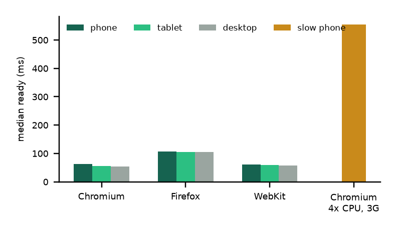
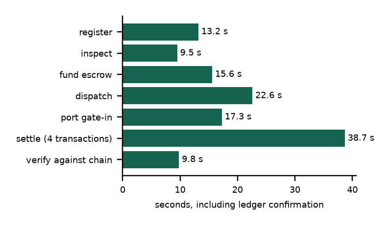

AXK Network
Capstone technical report · October 2026
Verification & Settlement Layer on Stellar
Four Soroban smart contracts and a Frappe v15 application for verified cross-border agricultural trade between Rwanda, the DRC and Uganda.
- Student
- Oghenetejiri Jesse
- Supervisor
- Junior Turatsinze
- Programme
- BSE Software Engineering, ALU
- Live system
- capstone.axk.org
- Demo video
- youtu.be/MrSXiJG_MAU
- Offline simulation
- axk-open-source-capstone.vercel.app
- Repository
- github.com/tejirijesse/axk-open-source-capstone
01Problem and approach
Cross-border agricultural trade between Rwanda, the DRC and Uganda fails at two points: a buyer cannot verify a lot's quality, custody and container integrity along the corridor, and settlement is slow and hard to trust. This project puts both in one workflow. A cooperative registers a lot, an independent inspector signs it off on-chain, a buyer locks payment in escrow, a carrier records dispatch under a container seal, the port checks the seal, and on delivery the contracts release payment, split it 40/40/20 between members and write an attestation anyone can check through a QR code.
02Scope: planned versus delivered
| Requirement (proposal) | Status | Evidence |
|---|
| Lot registry (FR) | Delivered | contracts/lot_registry, 18 tests; id is sha256(cooperative || lot_ref), write-once; only a digest goes on-chain. |
| Independent inspection (FR) | Delivered, extended | Allow-listed inspectors; a cooperative cannot inspect its own lot; offline capture in ODK added for low-connectivity sites. |
| Escrow (FR) | Delivered | contracts/escrow, 27 tests; asks the registry whether the lot passed; no payee argument; one live escrow per lot. |
| Logistics, seal, port gate-in (FR) | Delivered, extended | Waybill and port receipt attested; arriving seal compared with the waybill ("Tamper Alert" on mismatch). |
| Settlement and member split (FR) | Delivered on testnet | contracts/splitter, 12 tests; a Stellar test asset stands in for RWF. |
| Public trace and explorer (FR) | Delivered, extended | /trace with QR, no login and no personal data; GS1 EPCIS 2.0 export; /chain live event reader. |
| Security, authentication (NFR) | Delivered | 14 contract guarantees, each pinned by a test; hosted site needs a login with a reviewer role; 30 transactions per user per hour. |
| Performance, mobile, low bandwidth (NFR) | Delivered | 3 browser engines x 3 screen sizes plus a slow-3G phone: 80/80 page loads (section 05). |
| Mobile-money payout | Not implemented | Designed only: docs/design/set-3-mojaloop-payouts.md; SEP-24 anchor on the roadmap (SET-2). |
| Pilot with 30 to 50 users | Not yet run | Waiting for ethics approval; questionnaire, consent form and interview guide are ready. |
Why the plan changed. The proposal assumed React, Node.js and PostgreSQL. Frappe was used instead because it provides roles, a REST API and a database out of the box and matches AXK's platform, which left time for the contracts. Logistics and port steps were added because a custody gap between inspection and delivery made the trace incomplete. The pilot depends on ethics approval, which is in review.
03Functionality and architecture
MariaDB 10.11, Redis
DocType AXK Chain Trade
Role endpoints in trade_api.py
Pages www/trade/*, /trace, /chain
Canonical records and SHA-256 digests
One client class per contract
Trade workflow state machine
Signs through stellar-cli, no shell
Lot registry, escrow, splitter, attestation
Rust, soroban-sdk 22, wasm32v1-none
RWF test token (Stellar Asset Contract)
Each of the six trade steps is one HTTP call from a role screen to a whitelisted function in trade_api.py. The function checks the login and role and hands the trade to TradeWorkflow, which builds the canonical record, hashes it, calls the contract and stores the transaction hash on the AXK Chain Trade document. If the chain call fails, the step fails and nothing is recorded, so the database never claims something the ledger did not accept. Public pages read the stored hashes, re-check them against the contracts, and the browser re-hashes the records itself with WebCrypto.
3.1 Data handling and controls
- On-chain versus off-chain: trade documents stay in MariaDB; only their SHA-256 digests, statuses and account addresses go on-chain, so the ledger proves a record without revealing it.
- Access guard:
_guard() allows a signed-in user with the AXK Capstone Demo role (or System Manager). Demo mode only works for direct loopback requests; anything through a proxy is refused. The hosted site runs with demo mode off.
- Throttle:
_throttle() caps 30 signed transactions per user per hour, keyed by user, so a shared reviewer login cannot spam testnet.
- Keys: one Stellar identity per role, held on the server under the service user (directory 700, files 600, outside git). The browser never holds a key.
- Privacy:
verify.py exposes a fixed list of fields with no personal data to the public trace page.
3.2 Three ways to run it
Hosted at capstone.axk.org (Ubuntu 24.04, nginx, supervisor; operation in docs/handover.md). Full stack locally with make run-frappe: every action is a real testnet transaction. Offline simulation (make run, Python only, also on Vercel): the same screens with locally generated hashes, labelled "Offline simulation, not on-chain" on every page.
3.3 Behaviour with different inputs
| Input | System response |
|---|
| Buyer pays for a lot that was not inspected | Contract refuses with #10 LotNotApproved; no money moves |
| Cooperative inspects its own lot | Contract refuses with #3 NotAnInspector |
| Second escrow on a lot already sold | Contract refuses with #11 LotInEscrow |
| Arriving seal differs from the waybill | "Tamper Alert"; nothing attested; lot stays In Transit |
| Rejection without a reason; quantity 0; steps out of order | Refused before signing, with a plain message |
| Same ODK submission imported twice; moisture above 40% | Duplicate detected by instance id; out-of-range value refused |
| Stellar testnet slow or down | "Stellar testnet did not answer in time" after 90 s; nothing saved |
The contract refusals above were observed as real errors on testnet and are recorded with transaction links in docs/deployments.md. Every lot's history also exports as a GS1 EPCIS 2.0 document validated against the official schema.
04Testing
Five strategies, chosen by risk: contract unit tests, because money logic cannot be patched after deployment; application unit tests with stellar-cli replaced by a fake, so they run with no network; end-to-end lifecycle and failure-mode tests; standards validation; and cross-browser and device runs. Counts are from runs on 30 October 2026.
| Suite | Tests | What it checks | Command and result |
|---|
Smart contracts
contracts/*/src/test.rs | 65 | Registry 18, escrow 27, splitter 12, attestation 8: write-once records, allow-listed inspectors, inspection gate, fixed payee, deadline refund, lossless split, typed errors instead of panics. | make test-contracts
65 passed |
Ledger object model
scripts/test_ledger.py | 21 | Record digests match the original format, error tables, state machine refusals, resumable settlement after a failure, seal check. | make test-ledger
21 passed |
End to end
scripts/test_trade.py | 7 | Full lifecycle, inspection rejection, seal tampering, invalid transitions, unknown lot, web routes and trace page. | make test-python
7 passed |
EPCIS export
scripts/test_epcis.py | 8 | GS1 EPCIS 2.0 structure, official JSON schema, no private fields. | make test-epcis
8 passed |
ODK offline
scripts/test_odk.py | 9 | Form, importer and ODK Central sync; imports once, skips rejected submissions. | make test-odk
8 passed, 1 skipped (live) |
Compatibility
scripts/test_compat.py | 80 loads | 8 screens in Chromium, Firefox and WebKit at phone, tablet and desktop sizes, plus a slow phone: status, render, JS errors, sideways overflow. | Playwright
80/80, 0 problems |
Total: 110 automated tests and 80 page loads. A full trade was also run on testnet after each major change (latest AXK-LIVE-CP-20261030-0011), with all four records matching the chain.
4.1 Failure paths first
#[test] fn a_cooperative_cannot_inspect_its_own_lot() // Error::NotAnInspector
#[test] fn an_uninspected_lot_cannot_be_funded() // Error::LotNotApproved
#[test] fn an_unknown_trade_id_is_an_error_not_a_panic() // escrow and splitter
4.2 Improvements made because of test results
- Slow phones: the first page took 57.7 s on the low-end profile because every screen loaded 3.9 MB of framework bundles it never used. A lean page template now ships only each screen's own files (about 2.6 KB of HTML); the slowest low-end load fell to 2.7 s.
- Role screens: Logistics and Port took 66 s to open because balances were read for accounts that hold no token. Only token holders are read now, with a 2-minute cache: 1.4 s.
- Live explorer: broke when the Stellar RPC changed its event format; it now reads events over plain JSON-RPC and keeps only the fields it uses.
- Integrity: a failed chain call once left a placeholder hash; a failed transaction now fails the step. The simulation server no longer serves repository files for unknown URLs.
- Structure: the blockchain module was one procedural file; it became the ledger package (section 06), verified by 21 unit tests and a full testnet trade.
05Performance and compatibility
5.1 Browsers and devices (measured)
Host macOS 15, Apple silicon. Browsers: Chromium 156, Firefox 157, WebKit 27.2. "Ready" is the time until the screen's own content has rendered, measured over the 8 screens.
| Engine | Size | Profile | Pages OK | Median ready | Slowest | JS errors | Overflow |
|---|
| chromium | phone | normal | 8/8 | 62 ms | 157 ms | 0 | 0 |
| chromium | tablet | normal | 8/8 | 55 ms | 75 ms | 0 | 0 |
| chromium | desktop | normal | 8/8 | 54 ms | 74 ms | 0 | 0 |
| firefox | phone | normal | 8/8 | 108 ms | 230 ms | 0 | 0 |
| firefox | tablet | normal | 8/8 | 105 ms | 208 ms | 0 | 0 |
| firefox | desktop | normal | 8/8 | 106 ms | 198 ms | 0 | 0 |
| webkit | phone | normal | 8/8 | 62 ms | 202 ms | 0 | 0 |
| webkit | tablet | normal | 8/8 | 58 ms | 124 ms | 0 | 0 |
| webkit | desktop | normal | 8/8 | 58 ms | 97 ms | 0 | 0 |
| chromium | phone | 4x CPU, slow 3G | 8/8 | 555 ms | 2667 ms | 0 | 0 |

Median ready time per screen, by engine and size.

Seconds per step of one full trade on Stellar testnet.
5.2 Response time and resources
Local full stack, warm cache, median of 20: the role page 72.6 ms, the public trace page with QR 84.1 ms, API calls 3 to 4 ms, EPCIS export 4 ms. One full trade on testnet takes 126.7 s, of which settlement (four transactions) is 38.7 s; almost all of it is network confirmation at 5 to 6 s per ledger, so the signer uses a 90 s timeout and a clear error instead of hanging. The whole stack (web, workers, Redis, MariaDB) uses about 172 MB of memory at rest, so it fits a 2-core, 4 GB server. The main script is 15.7 KB compressed, there is no frontend framework, and the largest contract is 7.4 KB.
5.3 Hosted deployment
capstone.axk.org runs on an Ubuntu 24.04 VM: nginx with Let's Encrypt TLS in front of gunicorn (Frappe), MariaDB 10.11, Redis and supervisor, signing to Stellar testnet. Demo mode is off and every signing endpoint needs a login. Deploy, restart, key locations and the health check are in docs/handover.md. The Soroban RPC keeps about 7 days of events, so the pilot plan adds an indexer.
06Code quality and object-oriented design
The application's blockchain logic lives in frappe_app/axk_capstone/axk_capstone/ledger/, a package with no Frappe import: records.py (what is hashed), contracts.py (how contracts are called) and workflow.py (the order of a trade). chain.py only wires Frappe's config, cache and clock into it.
| Principle | Where it is applied |
|---|
| Encapsulation | ContractClient hides how a call is built, signed and decoded; callers write Escrow.create() or LotRegistry.inspect(). Soroban contracts keep state private; the only way to change a Lot is a method that checks the caller. |
| Abstraction | Abstract base classes CommandRunner (how commands run) and CanonicalRecord / AttestedRecord (what a record must provide). |
| Inheritance | LotRegistry, Escrow, Splitter, Attestation, Token extend ContractClient; LotRecord, InspectionReport, Waybill, PortReceipt, SettlementRecord extend the record bases; AXKChainTrade extends Frappe's Document. |
| Polymorphism | Each attested record answers attestation_key() its own way, so one verification loop covers all of them; each client has its own ERRORS table, so #10 reads "lot not approved" in escrow; StellarCli and the test runner are interchangeable. |
| State machine | TradeWorkflow allows only the moves in TRANSITIONS and explains refusals from REFUSALS; config, clock and checkpoint are injected, so settlement can resume after a failure. |
| Contracts | Each contract has typed structs and a #[contracterror] enum: failures are values, not panics. Escrow depends on the registry only through its client interface. |
| Readability | Doc comments on every contract entry point, error and storage key; module and endpoint docstrings; test names that read as rules; one make command per task. |
6.1 Algorithms
def canonical(obj):
return json.dumps(obj, sort_keys=True,
separators=(",", ":"), ensure_ascii=False)
The same record hashes the same in Python, in the browser re-check and in the EPCIS export. Lot ids are
sha256(cooperative || lot_ref), so an id cannot be squatted.
let part = if i as u32 == last { amount - paid }
else { amount * share.bps / BPS };
paid += part;
Integer division truncates; the last share takes what is left, so the parts always add up to the amount paid in.
Also: an inspection-gated escrow (a cross-contract call before any transfer), a hash chain over the trade's records verified against the attestation contract, and deterministic UUIDv5 event ids in the EPCIS export.
07Limitations and next steps
Keys are held by the server for each role (custodial), and the carrier's and port's attestations are signed by the verifier on their behalf; non-custodial signing (roadmap BUY-3, LOG-4) is the next step before real money. The system runs on testnet only and the contracts are not yet externally audited. The pilot starts after ethics approval, using the questionnaire and interview instruments already prepared. Mobile-money payout (SET-2, SET-3) and Kinyarwanda, French and Swahili translations (I18N-1) are planned. The project is MIT licensed, with CONTRIBUTING.md, SECURITY.md and a 43-item ROADMAP.md for contributors.